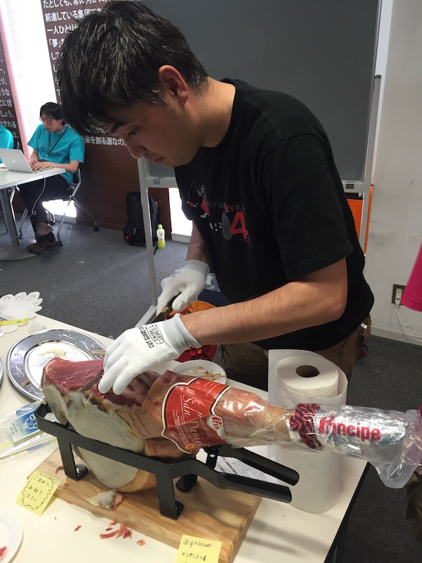
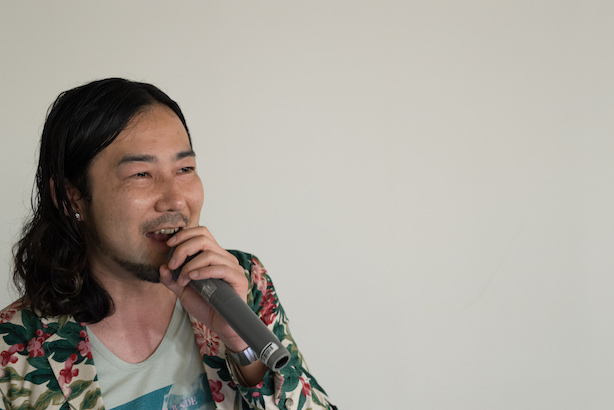

RegionalRubyKaigi レポート (59) TokyuRuby 会議 10
はじめに
TokyuRuby 会議 10 は、東京での RegionalRuby 会議として、2016 年 5 月 29 日に開催されました。本記事はその様子をレポートしたものです。
開催概要
- 開催日
- 2016-05-29 (土) 14:00 - 19:30
- 開催場所
- 株式会社 VOYAGE GROUP 様 会議室
- 主催
- Tokyu.rb
- 参加者
- 約 80 名
- 公式ページ
- http://regional.rubykaigi.org/tokyu10
- 公式ハッシュタグ
- #tqrk10
TokyuRuby 会議とは
TokyuRuby 会議は、Ruby に興味のあるエンジニアが集う Tokyu.rb が主催する LT 大会です。 第一回からの特徴として、「お酒・食べ物持ち込みあり」「その場で参加者から抽選で LT 発表者を選出する」「基調講演は当日の投票で選ぶ」などがあります。
会場の様子
受付
13:30 から受付を開始していますが、開始時刻 10 分前に既にかなりの参加者がこられました。会場に到着した参加者のみなさまには、受付手続きを終えると、早速ビールスポンサーのサントリーさんから注ぎたてのプレモルが振る舞われました。今回は工場直送の ザ・プレミアムモルツ、マスターズドリーム、香るプレミアム、黒、ほかほかなんと 7 種類の樽が！

開会
開会は、実行委員長の @yucao24hours からの挨拶と、既にみんな飲んでましたが改めて乾杯！
スポンサー LT 前半とスタッフによる投票アプリ説明
ビールスポンサーのサントリー様の LT は、プレモルセミナー TokyuRuby 会議バージョンです。希望された 4 人に前へ出てもらい、サントリー様のモルツと、ザ・プレミアム・モルツの飲み比べ。プレモルもおいしいけど、モルツもおいしく、みんな悩んでいました。そして、恒例のキャンペーンのご案内 LT もありましたが、参加されたみなさまは、応募ハガキ、もちろん応募されましたよね？CVR 1 、上げていきましょう。LT をしてくれた説明員さんは 2011 年の TokyuRubyKaigi04 に来てくださっていて（当時新人だったそうです）、今回凱旋プレゼンで会場を沸かせていました。
続いて、会場スポンサーの VOYAGE GROUP さんの会場ご案内 LT 。大きな銅鑼、飲食もできるステキな会場と、休憩の出来る和室、ソフトドリンクのご提供などなど、いつもありがとうございます。
また、実行委員長の @yukao24hours より LT 王と飯王の投票アプリの説明。今回も Web からの投票アプリが新機能を加えてパワーアップしました！
前半戦 LT
ライトニングトーク前半戦です！
| タイトル | 登壇者 |
|---|---|
| Rubykaigi Drinkup 日本酒スーパーバイザーによる5分で分かる日本酒 | joker1007 |
| RubyKaigiのDrinkupを支える技術 | koic |
| RubyKaigiはなぜチケットが万単位で公用語が英語なのか？ | amatsuda |
| メール製品を作って気づいたmailライブラリの光と闇について語る | kirikak2 |
| pt-osc的何かとマイグレーションのすりあわせについて | winebarrel |
| Rubyistのフィリピン留学 | oakbow |
| オーバー40からはじめる高校生活 | kwappa |
| Railsの日付とか時刻オブジェクトたちはどこのタイムゾーンにいるでしょうか | zunda |
| Kaizen Platform で行っている Kaizen Week というイベントで継続(ry | ryopeko |
技術的な話もありつつ、ほかにも RubyKaigi の裏側や、RubyKaigi ドリンクアップの酒側、日本酒の話など多様な発表内容になりました。また「続きを聞きたければ LT 王に投票を！」という戦略も飛び出し、登壇者の LT 王へかける意気込みが伝わってきました。
抽選 LT
みなさんの協力による迅速な進行と酔っ払い効果による早口化のおかげで予定より 30 分早く前半戦が終了。前半戦が終わると TokyuRuby 会議ではおなじみの抽選 LT。(参加者の中から抽選で選ばれる LT で、全員に発表のチャンスがあります！) 今回は 3 人の方を抽選で選んで発表していただきました。抽選プログラムはスタッフの @publichtml さん作で、猫の写真が大変けしからん素敵なアプリでした。この抽選 LT は、休憩時間の間に用意していただくのですが、短時間にもかかわらず、内容の濃い LT が繰り広げられました。
また、この休憩時間の間に、ビールスポンサーであるサントリーさんが帰られるということで、みんなでプレモルラストスパートに勤しみました。
スポンサー LT
| タイトル | 登壇者 |
|---|---|
| Tシャツスポンサー spice life様 | spice lifeのTMIX以外のサービス |
| esaスポンサー esa LLC様 | esa抽選会 |
後半戦の最初はスポンサー 2 社による LT。spicelife社 は オリジナルTシャツプリントサービスTMIX だけでなく、 Tシャツ販売サービスSTEERSと Disco Curly Fries を紹介。また、使っているサービス esa が前回の Tokyu09 からページ数が約 2 倍になり約 1 万ページになったことを紹介しました。
そのあとは情報共有ツール esa.io スポンサーの esa LLC 社さんによる TMIX 製 esa グッズの大抽選会。大人気の esa グッズを会場みんなでじゃんけんで争奪戦を繰り広げました。
後半戦 LT
| タイトル | 登壇者 |
|---|---|
| Ruby と戯れる OSS DTM | 5t111111 |
| またここで会おう、営業とエンジニアの距離を縮めて分かったこと | h-haneda |
| 私が Rails 5に入れたパッチとその背景 | k0kubun |
| オフィスのない会社で働いてみた | torinoko |
| 韻を踏むプログラムは書けるか | highwide |
| 天空の Tokyu.rb とは何だったのか | ginkouno |
| sms と電話を発信する gem の紹介 | anonaka |
| るびまを支える Ruby と人の力。そして未来のるびま（案） | miyohide |
| ビールビー presents Ruby のように赤いビールのすすめ | tkawa |
| 英語で広がる Ruby の世界 | morizyun |
| これは使える！社内用 sinatra app 20 連発 | onk |
| 最近コードレビューで困っていること | takiy33 |
サントリーさんからのプレモルの提供も終わり、みんなの酔いも有頂天！休憩も終わり、後半戦です。
@5t111111 さんの Ruby を使ったシンセサイザーアプリの紹介、そのままでは単音しか発音できないが、これを @joker1007 さん作の concurrent なワークフローエンジン gem rukawa を使って和音を演奏し、会場拍手喝采でノリノリとなりました。また近年のラップ熱の高まりを反映し、 @highwide さんによる TokyuRubyKaigi と韻が踏める言葉として「駐日大使」があるというラップサジェストアプリの紹介も。音楽でも盛り上がりました。
Accept LT
Accept LT は、TokyuRuby 会議名物の一つです。勢い余って前倒しになった時間を使い、その場で LT 登壇者を募って行う LT です。突然にも関わらず 18 名の方にご登壇いただきました。本当にありがとうございました。
ごはんと飯王 基調 LT
TokyuRubyKaigi ではみんなの手作りのごはんを持ち寄ってみんなで食べます。今回もおいしい料理がたくさん集まり、みんなで楽しみました。@arimo さんの手作りお寿司は圧巻で、あっという間に売り切れていました。飯王常連の @2celeb さんは地鶏のローストはオレンジソースが絶品でした。飯王経験者の @kwappa さんの低温調理とんかつはやわらかくジューシーで大変おいしかったです。また、今まで何度も TokyuRubyKaigi 実行委員長を務めた @ginkouno さんによる「金の力で飯王戦線を荒らしにきた！」という宣言とともに高級生ハムの原木が投入され飯王戦線は大混戦となりました。
私は @shokolateday さんのお麩のラスク、 @tagomoris さんの牛バラ肉とシイタケの甘辛炒めをおいしくいただきました。
今回の飯王は @ginkouno さん、史上初めて実行委員長と飯王を歴任する人物となりました。基調 LT では生ハムの原木の仕入れに関する人情話で会場を温かい気持ちで包みました。 
LT 王 基調 LT
LT 王はライブで会場を湧かせた @5t111111 さん。基調LTでは使用したgemの作者 @nagachika さんと @joker1007 さんに感謝しつつ、最後は @highwide さんのラップとコラボで会場は拍手大喝采で閉会しました。 
スタッフ T シャツ
TokyuRubyKaigi06 から引き続き、今回もスタッフの @yucao24hours がデザインしました。そして、T シャツの提供は、カスタマイズTシャツプリントサービス TMIX でした！

TokyuRuby 会議実行委員長システム
お馴染みの実行委員長 @ginkouno に替わり、今回は @yucao24hours が実行委員長を務めました。実行委員長の負荷分散を着々と進め持続可能なTokyuRubyKaigi を運営しています。
まとめ
TokyuRuby会議 10 は休憩時間にかわるがわる野良発表が行われ、活発な雰囲気で進みました。また、サントリーさんが用意した全 160L のビールのうち 120L を飲み干し、今回も完飲できなかったものの大健闘と言えるでしょう。
また、今回の投票アプリにより Web から料理や LT をした人へ気軽にフィードバックすることが可能になりました。この素晴らしい体験は、新しいTokyu の名物になりました。
最後に、発表者のみなさま、ビールスポンサーのサントリーさま、会場をご提供いただいた VOYAGE GROUP さま、スタッフ T シャツスポンサーの spice life さま、esa スポンサーの esa LLC さま、飯、酒を持ち寄ってくださったみなさま、参加者のみなさまありがとうございました。
Tokyu.rb とは
2 ヶ月に 1 度位、目黒でしゃぶしゃぶかすきやきを食べる Rubyist の集団。
お酒持ち込みのハッカソンも開催予定。 東急沿線でなくとも乗り入れ線沿線や、職場が沿線だったりする方も、全く関係が無い方も誰でも参加可能です。お気軽にお越しください。
https://www.facebook.com/groups/928069233888488/
当レポートは、 @koichiroo, @igaiga555 撮影の写真を使ってます。
https://www.flickr.com/photos/koichiroo/sets/72157669191123525
他にもたくさんの TokyuRuby 会議 10 の写真が掲載されています。よろしかったらご覧下さい。
※公開に問題があるようでしたらご連絡下さい。
著者について
五十嵐 邦明 (@igaiga555)
TokyuRuby 会議 10 レポート係。
株式会社spice life CTO。 自作の T シャツが作れるサービス TMIX 、T シャツ販売サービスSTEERS、アーティストの素材で T シャツを作れる Disco Curly Fries を開発しています。全国の Ruby イベントのスタッフ T シャツを TMIX でスポンサーすべくく活動しています。
-
ウェブサイトへのアクセス数、またはユニークユーザーのうち、何割がコンバージョンに至るかの割合を示す指標 ↩